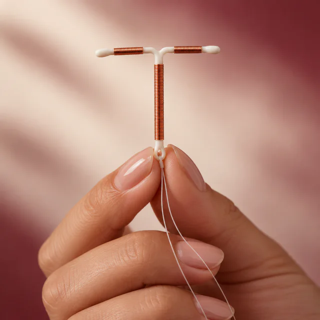
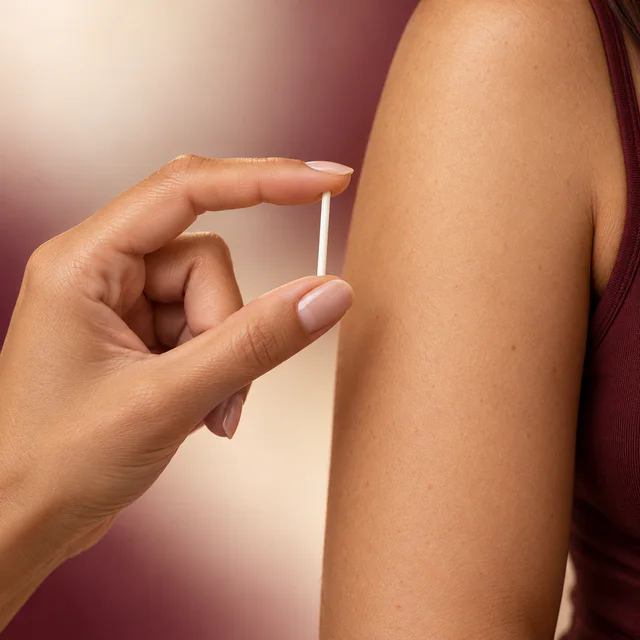
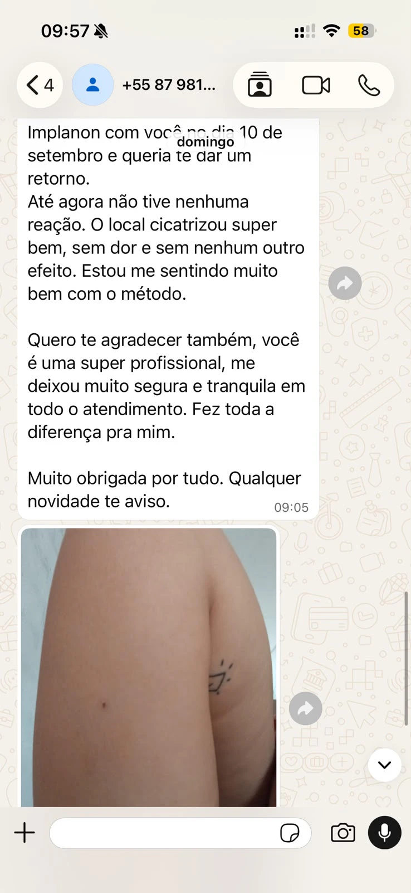
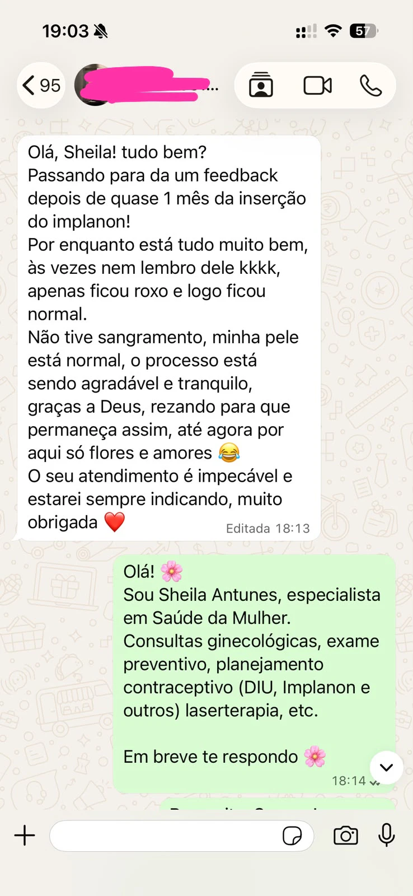
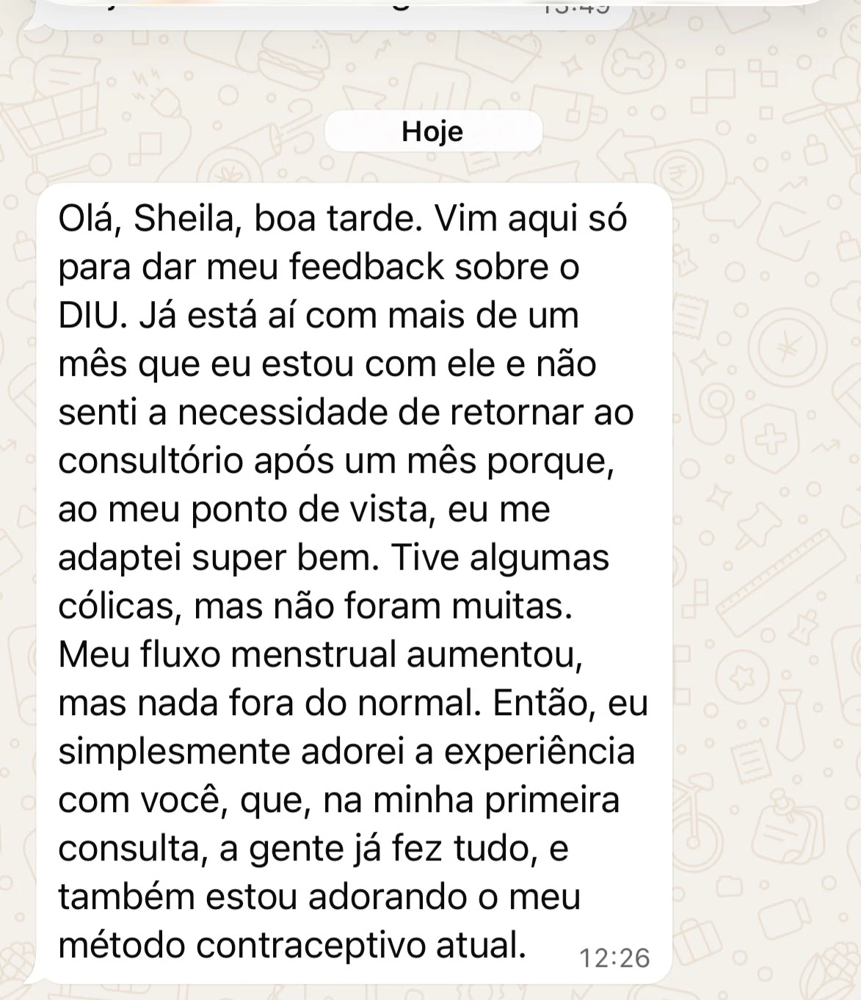

Saúde íntima feminina • Juazeiro/BA
Implanon & DIU.
PROTEÇÃO SEGURA E SEM COMPLICAÇÃO
Protegida e no controle!
ENTRE EM CONTATO✓ Consulta especializada✓ Atendimento humanizado
+10 anosna saúde da mulher
Informação que acolhe
Protegida e no controle!
Conteúdo direto para você entender suas opções com mais segurança.
Escolha com orientação
CONSULTA E INSERÇÃO DE IMPLANON OU DIU
Pare de sofrer com efeitos colaterais, sobrepeso, riscos a saúde e a falta de libido! A liberdade que você busca esta em um anticoncepcional de longa duração.
- Consulta especializada
- Teste rápido de gravidez
- Protocolo de analgesia para inserção
- Suporte on-line WhatsApp para tirar dúvidas sobre período de adaptação
.jpeg)
Compare os métodos
Qual escolher?

DIU
Liberdade de longa duração
- Sem hormônio
- Longa duração (até 10–12 anos, conforme modelo)
- Zero rotina (não precisa lembrar todo mês)
- Ótimo custo-benefício no longo prazo

Implanon
Praticidade no braço
- Até 3 anos de proteção
- Aplicação rápida e discreta (no braço)
- Sem estrogênio e sem rotina diária
- Reversível (retirada por profissional)
.jpeg)
Conheça a profissional
Olá, seja muito bem vinda!
Eu me chamo Sheila
Sou enfermeira (COREN-BA 451642) há mais de 10 anos atuando na área da saúde da mulher. Entre minha formações e especializações está pós-graduação em Saúde da Mulher, Ginecologia Natural e Laserterapia. Também possuo conhecimento aprofundado em Enfermagem do Trabalho e Gestão em Saúde (o que me permite oferecer cuidados de qualidade e orientação especializada em diferentes contextos) entre outros.
Além da prática clínica, tenho o privilégio de atuar como preceptora e docente nos cursos de Enfermagem e Medicina, compartilhando meu conhecimento e experiência com futuros profissionais da área da saúde. Minha paixão pelo cuidado e bem-estar das mulheres me motiva diariamente a proporcionar um atendimento empático, eficiente e baseado nas melhores práticas da enfermagem.
ENTRE EM CONTATOExperiências reais
DEPOIMENTOS
.jpeg)





Estrutura acolhedora
CONSULTÓRIO
Aqui, sua saúde e bem-estar é minha prioridade! Conte com um ambiente acolhedor e seguro, onde você é tratada com atenção, respeito e confidencialidade.
Estou pronta para ouvir suas necessidades e oferecer um cuidado personalizado com tecnologia avançada e atendimento humanizado.
Atendimento completo e personalizado em;
• Inserção de implanon
• Consulta ginecológica de enfermagem
• Coleta de exame preventivo
• Consulta a adolescente
• Inserção do DIU
• Laserterapia: tratamento de candidíase
• Vaginose bacterina
• Ressecamento vaginal…
Rua: Dos Eucaliptos 208, BAIRRO Jardim Universitário, Juazeiro/Ba- CEP:48904-167
ENTRE EM CONTATO.jpeg)
Informação transparente
DÚVIDAS FREQUENTES
Preciso de encaminhamento médico para agendar?
Não. Você pode agendar a avaliação diretamente. Na consulta, analiso seu histórico, verifico exames recentes e, se for necessário, peço exames complementares. Tudo é decidido junto com você, com orientações claras.
Como decido o método ideal para mim?
Na avaliação, analiso seu histórico e objetivos e, com base em critérios clínicos, mostro as opções que realmente fazem sentido para você.
Dói? E como fica minha rotina depois?
Usamos analgesia para conforto. É comum um desconforto leve e temporário. Na maioria dos casos, você retoma as atividades no mesmo dia, seguindo cuidados simples.
O que está incluído no serviço?
Avaliação especializada, protocolo de analgesia, teste rápido de gravidez, ultrassom quando indicado para avaliação/posicionamento.